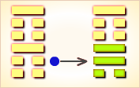

周易第52卦_艮卦(艮为山)_艮上艮下
如有疑问互相交流，微信：470283584
周易第52卦详解
艮卦原文
艮。艮其背，不获其身。行其庭，不见其人。无咎。
象曰：兼山，艮。君子以思不出其位。
白话文解释
艮卦：卸掉责任，挂笏隐退，朝列之中已看不到他的身影，在他的庭院中寻找，也没有找到。其人远走高飞，自无灾祸。
《象辞》说：本卦为两艮卦相重，艮为山，可见艮卦的卦象是高山重立，渊深稳重。君子观此卦象，以此为戒，谋不踰位，明哲保身。
《断易天机》解
艮卦艮上艮下，为艮宫本位卦。艮为停止的意思，为钱财散失之象，需谨慎提防。
北宋易学家邵雍解
停留阻止，无可再进；随份勿贪，不可强求。
得此卦者，前路受阻，不宜妄进，宜守待机。
台湾国学大儒傅佩荣解
时运：运势平平，不宜妄进。
财运：守好本业，不可贪财。
家宅：不宜改造；命由前定。
身体：带病延年。
传统解卦
这个卦是同卦（下艮上艮）相叠。艮为山，二山相重，喻静止。它和震卦相反。高潮过后，必然出现低潮，进入事物的相对静止阶段。静止如山，宜止则止，宜行则行。行止即动和静，都不可失机，应恰到好处，动静得宜，适可而止。
大象：两重高山并峙，故宜止不宜进，阻塞之象。
运势：凡事不宜妄动，前路受阻，只好待机而动。
事业：在经过一段发展后，应进行调整，暂时停止行动，总结经验教训。不可因贪名利而妄进。自我克制，自我约束，谨言慎行，不要盲目追求他人。经过休整后，在适当时机到来时，再大显身手。
经商：进入停滞不前的状态，切勿盲目冒进，而宜适时停止，进入安静退守，不要受外界干扰，尤其是应该保持内心和理智上的宁静，更不要轻易与他人合作。等待时机，必有光明前途。
求名：应保持纯正的目的，静守正道。勿为功名诱惑，秉守忠厚，可得成功。
婚恋：重感情，彼此以诚相待，可白头到老。
决策：性格沉静、内向，不喜好活动，也不善于交际，为人忠诚老实，讲信义。注意听取他人的建议，明哲保身。机遇不到，不宜积极活动，该止则止，勿抱不切实际的想法。
台湾张铭仁解卦
山：表示停止、退守之意，六冲纯卦，主大好大坏之象。凡事应当知进退、量力而为。有如登山越岭般，需充分审视自己的体能，和山上的情势，绝不可强行逞能，适时的休息，方能平安度过。得此卦时应有大事或障碍、不顺阻挡在前，若能保守、修身养性则安，反则为凶。
解释：不动，自己改变。
特性：耐性佳，保守经营，努力奋斗，老成持重，有偏财运，精于计划分析，处事有条理，公私分明，择善固执。
运势：应当洁身自爱，依赖心不要太重，否则不利。凡事不可轻举妄动，诸事宜守，相辅得吉。儒家有言：『静亦定，动亦定』，此非言死等，宜中正德行，固守贞常之道，凡事有定之理也。
家运：不和，家运停滞不发，改正自己以谋求开运之道，内有动荡、困境。
疾病：难治，注意肠胃血管硬化及结核病。
胎孕：难产之虞。
子女：子女多有不和、不相辅之数。
周转：难成。
买卖：有些小是非，失利之象，但可成。
等人：不会来。
寻人：西南方，难寻。
失物：可以寻回，但要等一段时间。藏在家中、旅馆、寺院、山中某处。
外出：慎重为好，宜另择佳日。
考试：落榜。
诉讼：因小事而化大，宜速求和，忌土姓人。
求事：固守本份为宜。
改行：不利。
开业：开业不宜，须再待时。
周易第52卦初六爻详解
初六爻辞
初六。艮其趾，无咎。利永贞。
象曰：艮其趾，未失正也。
白话文解释
初六：歇脚养息，不要轻举妄动，自然无灾难，这是长期吉利的贞兆。
《象辞》说：歇脚养息，不要轻举妄动，远离不义，不失正道，自然永远吉利。
北宋易学家邵雍解
平：得此爻者，宜守本份，不要纵欲。做官的保守己职者无失。
台湾国学大儒傅佩荣解
时运：初交好运，退守无咎。
财运：知足常乐，多行善事。
家宅：可以长住；百年好合。
身体：足疾就医。
初六变卦
初六爻动变得周易第22卦：山火贲。这个卦是异卦（下离上艮）相叠。离为火为明；艮为山为止。文明而有节制。贲卦论述文与质的关系，以质为主，以文调节。贲，文饰、修饰。
周易第52卦六二爻详解
六二爻辞
六二。艮其腓，不拯其随，其心不快。
象曰：不拯其随，未退听也。
白话文解释
六二：停立不行，但腿部肌肉还是负伤。心里很不愉快。
《象辞》说：腿部肌肉还是负伤，因为其人固执己见，没有退回来，听取别人的意见。
北宋易学家邵雍解
凶：得此爻者，运势受阻，或奔波在外，多劳苦；或有足疾。做官的得不到他人的帮助，不宜上进。
台湾国学大儒傅佩荣解
时运：运途受阻，缺少援手。
财运：止而不售，难免心忧。
家宅：不宜迁居；避开此婚。
身体：药物难治。
六二变卦

六二爻动变得周易第18卦：山风蛊。这个卦是异卦（下巽上艮）相叠，与随卦互为综卦。蛊本意为事，引申为多事、混乱。器皿久不用而生虫称“蛊”，喻天下久安而因循、腐败，必须革新创造，治理整顿，挽救危机，重振事业。
周易第52卦九三爻详解
九三爻辞
九三。艮其限，列其夤，厉薰心。
象曰：艮其限，危薰心也。
白话文解释
九三：卸掉重担，保护腰部，但是胁间肉却已裂开了，引退不及时，则罹凶险。这是由于为名利所惑，不能迅速引退卸职所招致的灾祸。
《象辞》说：“卸掉重担，保护腰部，胁间肉却已裂开了，引退不及时，则罹凶险”，危险是由为名利迷惑所致。
北宋易学家邵雍解
凶：得此爻者，不顺之时，危难不安。
台湾国学大儒傅佩荣解
时运：顺时可成，不可勉强。
财运：闭关自守，难免穷困。
家宅：往来为宜；不拘门户。
身体：血脉不通。
九三变卦

九三爻动变得周易第23卦：山地剥。这个卦是异卦（下坤上艮）相叠。五阴在下，一阳在上，阴盛而阳孤；高山附于地。二者都是剥落象，故为“剥卦”。此卦阴盛阳衰，喻小人得势，君子困顿，事业败坏。
周易第52卦六四爻详解
六四爻辞
六四。艮其身，无咎。
象曰：艮其身，止诸躬也。
白话文解释
六四：引退保身，没有灾祸。
《象辞》说：引退保身，是说其人注意力全部集中在自身的安危上，所以不会招惹灾难。
北宋易学家邵雍解
平：得此爻者，宜安分守常，不可有非分之想。
台湾国学大儒傅佩荣解
时运：无得无失，保身无咎。
财运：可以保本，另得良机。
家宅：平安无事；婚姻平平。
身体：带病延年。
六四变卦

六四爻动变得周易第56卦：火山旅。这个卦是异卦（下艮上离）相叠。此卦与丰卦相反，互为“综卦”。山中燃火，烧而不止，火势不停地向前蔓延，如同途中行人，急于赶路。因而称旅卦。
周易第52卦六五爻详解
六五爻辞
六五。艮其辅，言有序，悔亡。
象曰：艮其辅，以中正也。
白话文解释
六五：闭口少言，讲话有分寸，自然没有悔恨。
《象辞》说：闭口少言，讲话有分寸，没有悔恨，因为六五之爻居上卦中位，像人谨守中正之道。
北宋易学家邵雍解
平：得此爻者，正人君子，人情和合，谋望遂意。做官的会居要职。
台湾国学大儒傅佩荣解
时运：言谈中正，自然可取。
财运：保密为要，商机可成。
家宅：位得中正；慎防巧言。
身体：口能发声，病即可治。
六五变卦

六五爻动变得周易第53卦：风山渐。这个卦是异卦（下艮上巽）相叠。艮为山，巽为木。山上有木，逐渐成长，山也随着增高。这是逐渐进步的过程，所以称渐，渐即进，渐渐前进而不急速。
周易第52卦上九爻详解
上九爻辞
上九。敦艮，吉。
象曰：敦艮之吉，以厚终也。
白话文解释
上九：注意保护自己的脑袋，首级不失，自然吉利。
《象辞》说：爻辞讲以忠厚为归宿之所以吉利，因为上九之爻为一卦之终爻，像人秉守忠厚，必得善终。
北宋易学家邵雍解
吉：得此爻者，多福多利，但易防不吉之事。做官的会升迁，读书人会取得佳绩。
台湾国学大儒傅佩荣解
时运：好上加好，自然吉祥。
财运：上手生意，获利自多。
家宅：世代忠厚；婚姻吉祥。
身体：体质厚实。
上九变卦

上九爻动变得周易第15卦：地山谦。这个卦是异卦（下艮上坤）相叠，艮为山，坤为地。地面有山，地卑（低）而山高，是为内高外低，比喻功高不自居，名高不自誉，位高不自傲。这就是谦。